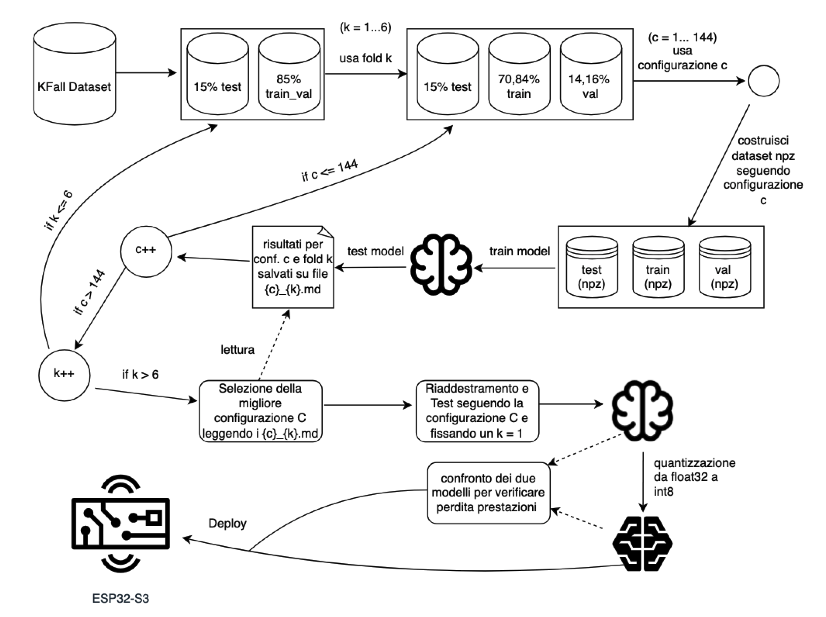

📖 Panoramica del Progetto
Questo progetto implementa un sistema completo di rilevazione delle cadute pre-impact basato su deep learning, che integra:
- Training automatizzato con k-fold cross-validation
- Modello CNN-GAP ottimizzato per dispositivi embedded
- Quantizzazione int8 per deployment efficiente
- Inferenza real-time su microcontrollore ESP32
🎯 Obiettivo
Rilevare cadute in fase pre-impact (prima dell'impatto al suolo) utilizzando dati da IMU (accelerometro + giroscopio) per permettere l'attivazione tempestiva di sistemi di protezione come airbag indossabili.
🏗️ Architettura del Sistema

Il sistema è strutturato secondo un'architettura pipeline end-to-end che copre l'intero ciclo di vita del progetto, dalla preparazione dei dati fino al deployment su hardware embedded. L'architettura garantisce un flusso di lavoro riproducibile dalla sperimentazione alla produzione, con particolare attenzione all'efficienza computazionale per dispositivi a risorse limitate.
1️⃣ Acquisizione e Pre-elaborazione dei Dati
I dati provengono dal dataset pubblico KFall, che contiene registrazioni da sensori IMU (accelerometro e giroscopio a 3 assi) campionati a 100 Hz. La fase di preprocessing include:
- Split per soggetto: la suddivisione in train/validation/test avviene a livello di soggetto (non di singole registrazioni) per evitare data leakage e garantire la generalizzazione del modello a nuovi individui
- Organizzazione in finestre temporali: i segnali continui vengono segmentati in finestre scorrevoli di dimensione configurabile (30, 40 o 50 campioni), permettendo al modello di analizzare pattern temporali brevi ma significativi
- Normalizzazione: standardizzazione z-score calcolata sul solo training set e applicata a tutti i set per preservare la validità statistica
- Gestione sbilanciamento: tecniche di stride differenziato e gestione finestre a cavallo per bilanciare la rappresentazione delle classi
2️⃣ Training e Selezione del Modello
La fase di training utilizza una pipeline automatizzata che esplora sistematicamente lo spazio degli iperparametri attraverso k-fold cross-validation (k=6) per soggetto. Il processo include:
- Ricerca configurazioni: testing esaustivo di 144 configurazioni che combinano parametri di preprocessing (dimensione finestra, gestione finestre miste, stride negativi) e training (fattore riduzione learning rate)
- Architettura CNN-GAP: il modello è una Convolutional Neural Network con Global Average Pooling che sostituisce le LSTM tradizionali, riducendo drasticamente il numero di parametri mantenendo la capacità di catturare dipendenze temporali. L'architettura comprende 3 blocchi convoluzionali con batch normalization e max pooling, seguiti da GAP, layer denso con dropout e output sigmoide
- Loss function specializzata: Binary Focal Crossentropy con class weighting (alpha=0.75) per gestire lo sbilanciamento delle classi e focus sui campioni difficili (gamma=2.0)
- Validazione robusta: metriche a livello di finestra (accuracy, precision, recall, PR-AUC) e a livello di evento (sensibilità, specificità, lead time) per valutare le prestazioni in scenari realistici
- Selezione ottimale: identificazione della configurazione migliore basata su ranking multi-criterio che bilancia accuratezza e lead time
3️⃣ Quantizzazione e Deployment
La fase finale prepara il modello per l'esecuzione su hardware embedded attraverso post-training quantization:
- Quantizzazione int8: conversione del modello da float32 a int8 utilizzando un representative dataset bilanciato estratto dal training set, riducendo la dimensione del modello di ~4x e accelerando l'inferenza
- Ottimizzazione per ESP32: utilizzo di TensorFlow Lite Micro con operatori ottimizzati da esp-nn per sfruttare le caratteristiche hardware-specific del microcontrollore
- Validazione post-quantizzazione: verifica che la perdita di accuratezza sia contenuta (<2%) attraverso confronto diretto con il modello Keras originale
- Deployment firmware: integrazione del modello quantizzato in un firmware FreeRTOS multi-task che coordina acquisizione IMU (100 Hz), inferenza real-time con finestra scorrevole (stride 10) e attivazione airbag con latenza minima
- Ottimizzazione risorse: gestione efficiente di memoria RAM (~36KB) e Flash (~400KB) attraverso tensor arena pre-allocata, buffer statici e comunicazione inter-task tramite code FreeRTOS dimensionate per garantire buffering durante l'inferenza
⚙️ Dettagli Implementativi
🧠 Modello CNN-GAP
- 3 blocchi Conv1D con BatchNorm
- Global Average Pooling (no LSTM)
- Binary Focal Crossentropy
- ~10-15KB quantizzato
📊 Dataset e Training
- Dataset KFall (pubblico)
- Split per soggetto
- 104 configurazioni testate
- Finestra ottimale: 40 campioni
🔧 Firmware ESP32
- FreeRTOS multi-task
- IMU ICM20948 via I2C
- Finestra scorrevole stride 10
- Attivazione airbag real-time
⚡ Prestazioni ESP32-S3
- RAM: ~36KB
- Flash: ~400KB
- Latenza inferenza: ~2ms
- Frequenza predizioni: ~10Hz
💻 Repository del Progetto
🎓 Training e Quantizzazione
Pipeline completa di training con k-fold cross-validation, selezione configurazione ottimale e quantizzazione TFLite.
Vai alla Repository →🔌 Firmware ESP32
Firmware per ESP32 con acquisizione IMU, inferenza TFLite Micro e sistema di attivazione airbag real-time.
Vai alla Repository →